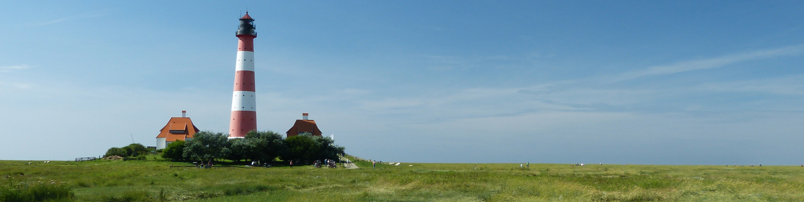

</div>


 
    <!-- SlidesJS Required: Start Slides -->
  <!-- The container is used to define the width of the slideshow -->
  <div class="container">
    <div id="slides">
      
      
      
    </div>
  </div>
  <!-- End SlidesJS Required: Start Slides -->

  <!-- SlidesJS Required: Link to jQuery -->
  <script src="http://code.jquery.com/jquery-1.9.1.min.js"></script>
  <!-- End SlidesJS Required -->

  <!-- SlidesJS Required: Link to jquery.slides.js -->
  <script src="jquery.slides.min.js"></script>
  <!-- End SlidesJS Required -->

  <!-- SlidesJS Required: Initialize SlidesJS with a jQuery doc ready -->
  <script>
    $(function() {
      $('#slides').slidesjs({
        width: 940,
        height: 528,
        play: {
          active: true,
          auto: true,
          interval: 4000,
          swap: true
        }
      });
    });
  </script>
  <!-- End SlidesJS Required -->
  
  
<div class="streken">
    <div class="titel">
        <h1> Pakketten uit alle streken van het land </h1>
    </div>
    
    <p>Proin eu odio tristique, tempor lacus ac, volutpat diam. Nulla</p>
    </div>

    <div class="tekens">
        <p>Tekens</p>
    </div>

<div class="streek">
    <div class="titel">
        <h1>Erkende streekproducten</h1>
    </div>
    
    <p>Proin eu odio tristique, tempor lacus ac, volutpat diam. Nulla</p>
</div>

<div class="provincie">
    <div class="titel">
        <h1>Kies een Provincie!</h1>
    </div>
    
    <p>Proin eu odio tristique, tempor lacus ac, volutpat diam. Nulla</p>
</div>


<br>
<br>

